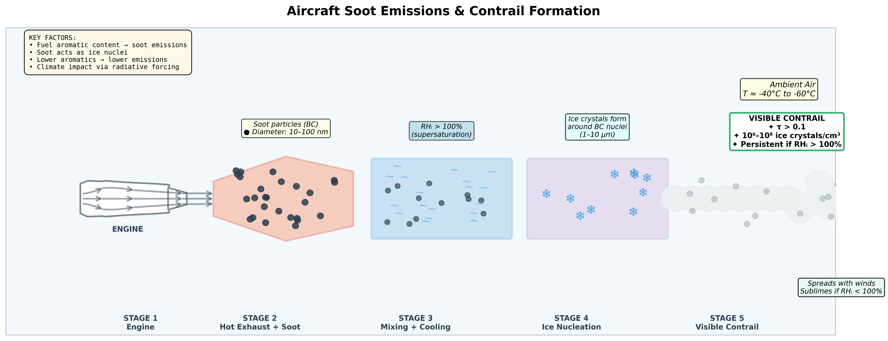

Research
Cost benefit analysis of low aromatic jet fuel
Problem

Aromatics have higher binding energy between atoms compared to aliphatic compounds. Jet fuel with higher aromatics content has higher soot emissions.
Soot emissions have a variety of impacts:

Opportunity
- Consider 2 forms of refining: hydrotreatment and extractive distillation
- Assess model with 3 different crude oils with various sulfur/aromatics content
- Evaluate climate and air quality benefits/disbenefits from production and utilization of low-aromatic fuel
- Conduct sensitivity analysis
Weekly updates
📝 Week 1
Click to view details

About
Background
I'm Tara Housen, a Doctoral candidate in Aeronautics and Astronautics at MIT working in the Lab for Aviation and the Environment.
I'm originally from New Jersey. I earned my B.S. in Mechanical Engineering at Villanova University in 2022. During undergrad I interned at Safran Aerosystems which got me interested in Aerospace. Post-graduation I pursued my Masters in Aerospace Engineering at MIT where I conducted research on direct air capture for atmospheric CO2 removal. Presently, I am pursuing my Phd in Aerospace and conducting research on sustainable drop-in fuels for aviation. My current project is focused low aromatic jet fuel to reduce contrail impacts.
Outside of research, I enjoy baking, traveling, and working out.
Contact
Email: thousen@mit.edu
Phone: 732-456-2041
Location: 412 Laurel Ave, Brielle, NJ 08730